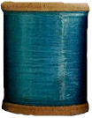
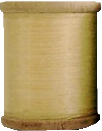
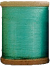
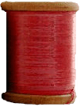

   
Stacy's Stitches
Some of My Favorite Sites
This site, The DIY Dish, shows "How to Make an Easy Quilt!" It's not only easy for a beginner; it's adorable! Kim and Kris have some wonderful projects.
What to do with all those scraps of fabric? Check out this link.
Home
Send Text
Price List
Photo Gallery
Favorite Links
About